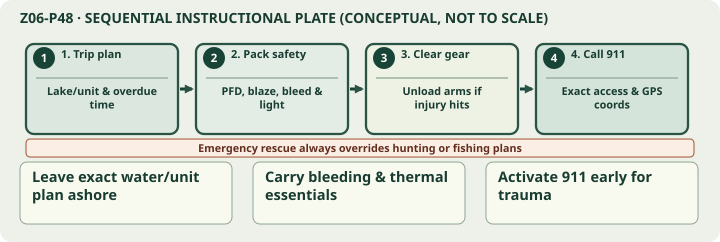

Z06-P48 · Hunting and fishing · New manuscript
Hunting and Angling Trip Plans and Emergency Incident Reporting
Establish reliable check-in plans, trauma readiness, and emergency reporting procedures for remote hunting and fishing outings.
When it applies · All solo or group hunting, shore-angling, boating, and ice-fishing outings.
Equipment · Written trip plan with shore contact, whistle, charged comm/PLB, bleeding/thermal first-aid kit.

Actions
- Leave a written trip plan with a trusted contact specifying exact launch/parking spot, hunting unit or lake name, vehicle description, companion names, and overdue-alert time.[H15, H18, T08]
- Carry essential trauma and cold-exposure items—including bleeding-control dressings/tourniquet where trained, whistle, headlamp, dry fire/thermal layer, and offline GPS coordinates—on every outing.[H03, H18, M01]
- Activate 911 immediately for any firearm, archery, treestand-fall, capsizing, or cold-immersion incident, giving exact access coordinates and securing unloaded firearms before responders arrive.[H03, H15, H18]
Failure recognition · Hunting or boating solo without a check-in plan or delaying 911 after a fall or gunshot wound turns survivable emergencies fatal.[H03, H18, T08]
Verify · Shore contact holds exact location and return deadline, trauma/thermal essentials are packed, and firearms are cleared before EMS arrival.[H03, H18, T08]
Stop or change course · Stop and activate emergency rescue immediately for any severe bleeding, fall from height, cold-water immersion, or lost/overdue party member.[H03, H18, M01]
Evidence and editorial notes
- H03 · Minnesota DNR · Firearms Safety Certification and Hunter Education (Current web edition)
- Section: Four fundamental firearm safety rules and certification · Conditions: Any firearm handling, transport, or field carry
Support: Treat every firearm as loaded, keep the muzzle in a safe direction, keep finger off the trigger until ready to shoot, and verify target and what is beyond it.
Limitations: Certification is required by age/statute in Minnesota; written summaries never substitute for formal certified safety instruction. · Conflicting evidence: None noted.
Editorial note: Mandatory Z06 bounded weapon-safety gate. · Specialist reviewer: Certified hunter-education and firearm safety instructor
Primary source · checked 2026-11-25 - H15 · Minnesota DNR · Turn In Poachers (TIP) and Conservation Officer Reporting (Current web edition)
- Section: Turn In Poachers (TIP) and wildlife incident reporting · Conditions: Suspected wildlife violations, injured game, or unsafe incidents
Support: Observe from a safe distance, record location, time, descriptions, and license plates without confronting suspects, and report to MN DNR TIP or Conservation Officers.
Limitations: Do not pursue armed or hostile individuals or disturb physical evidence. · Conflicting evidence: None noted.
Editorial note: Defines Z06/Z07 non-confrontational incident reporting. · Specialist reviewer: Conservation enforcement reviewer
Primary source · checked 2026-11-25 - H18 · Minnesota DNR · Waterfowl Hunting and Federal Migratory Bird Rules (Current web edition)
- Section: Waterfowl cold-water capsizing and non-toxic shot compliance · Conditions: Wetland and open-water fall waterfowl environments
Support: Cold-water immersion, overloaded boats, and wading drop-offs cause severe fatalities; wear flotation, check forecasts, and verify federal non-toxic shot and species limits.
Limitations: Emergencies and weather shifts override harvest goals; stay ashore in high wind or unverified ice. · Conflicting evidence: None noted.
Editorial note: Reconciles B013 P15-P16 with Z06 water/ice limits. · Specialist reviewer: Water-safety and wildlife reviewer
Primary source · checked 2026-11-25 - M01 · American College of Surgeons · STOP THE BLEED Training Course (current web edition)
- Section: Ensure Your Own Safety; Find Life-Threatening Bleeding; Compress · Conditions: Lay responder encountering severe external hemorrhage
Support: Ensure scene safety first, call 911, expose the wound to locate life-threatening bleeding, and apply firm continuous direct pressure with clean gauze or cloth.
Limitations: Does not replace formal hands-on Stop the Bleed training or EMS trauma care. · Conflicting evidence: None across ACS/ARC guidelines.
Editorial note: Separates life-threatening arterial/venous hemorrhage from minor scrapes. · Specialist reviewer: Wilderness medicine and trauma EMS
Primary source · checked 2026-11-24 - T08 · NOAA NCEI · Magnetic Declination (current web edition)
- Section: Definition and bearing conversion · Conditions: Trip planning with a map and compass
Support: Declination varies by date and geographic position. Determine the map reference and current local value.
Limitations: Outdated map margins can have meaningful declination drift over decades. · Conflicting evidence: None; retained for navigation reconstructions.
Editorial note: Preserved for Z11 continuity. · Specialist reviewer: Navigation and search and rescue
Primary source · checked 2026-11-24
Source lineage · New manuscript (Z06 P17 emergency communication) · Classification · New manuscript.